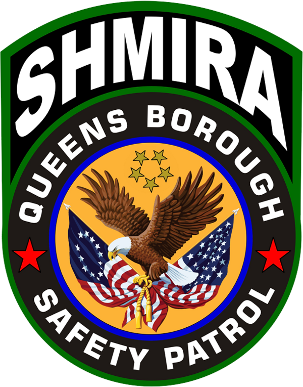
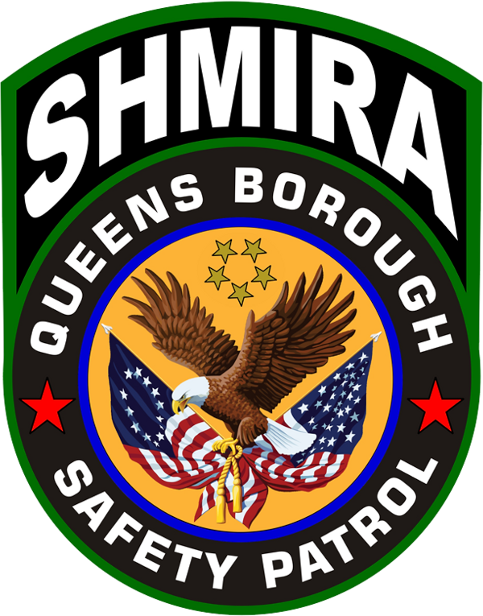
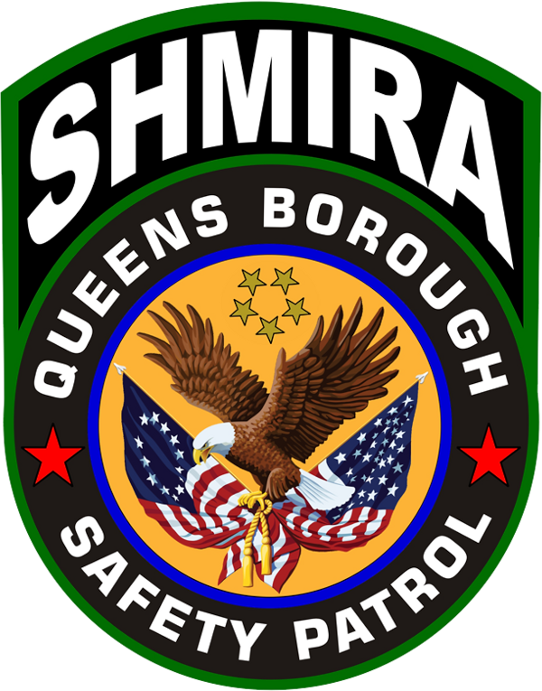

BACK to USA
EVERYTHING
New York
State Agencies
New York State Police
New York State Park Police
New York State
Department of Environmental Conservation
Police
New York/New Jersey Port AuthorityPolice Department
New York State Sheriff's Association
New York City
"The Five Boroughs"
Kings County
(Borough of Brooklyn)
Queens County
(Queens)
New York County
(Borough of Manhattan)
Bronx County
(The Bronx)
Richmond County
(Staten Island)

Counties
Suffolk County
Suffolk County Sheriff
Nassau County
Nassau County Sheriff
Nassau County Police
Westchester County
Westchester County Police
Erie County
Erie County Sheriff
Monroe County
Monroe County Sheriff
Onondaga County
Onondaga County Sheriff
Orange County
Orange County Sheriff
Rockland County
Rockland County
Albany County
Albany County Sheriff
Albany County Sheriff's EMS
Dutchess County
Dutchess County Sheriff
Saratoga County
Saratoga County Sheriff
Oneida County
Oneida County Sheriff
Niagara County
Niagara County Sheriff
Broome County
Broome County Sheriff
Ulster County
Ulster County Sheriff
Schenectady County
Schenectady County Sheriff
Rensselaer County
Rensselaer County Sheriff
Chautauqua County
Chautauqua County Sheriff
Oswego County
Oswego County
Jefferson County
Jefferson County Sheriff
Ontario County
Ontario County Sheriff
St. Lawrence County
St. Lawrence County
Tompkins County
Tompkins County
Putnam County
Putnam County
Steuben County
Steuben County
Wayne County
Wayne County
Sullivan County
Sullivan County
Clinton County
Clinton County
Cattaraugus County
Cattaraugus County
Cayuga County
Cayuga County Sheriff
Cayuga County Police
Madison County
Madison County
Warren County
Warren County
Livingston County
Livingston County
Columbia County
Columbia County
Otsego County
Otsego County
Washington County
Washington County
Herkimer County
Herkimer County
Genesee County
Genesee County
Fulton County
Fulton County
Montgomery County
Montgomery County
Montgomery County
Tioga County
Tioga County
Greene County
Greene County
Allegany County
Allegany County
Franklin County
Franklin County
Chenango County
Chenango County
Cortland County
Cortland County
Delaware County
Delaware County
Wyoming County
Wyoming County
Orleans County
Orleans County
Essex County
Essex County
Seneca County
Seneca County
Schoharie County
Schoharie County
Lewis County
Lewis County
Yates County
Yates County
Schuyler County
Schuyler County
Hamilton County
Hamilton County


 
